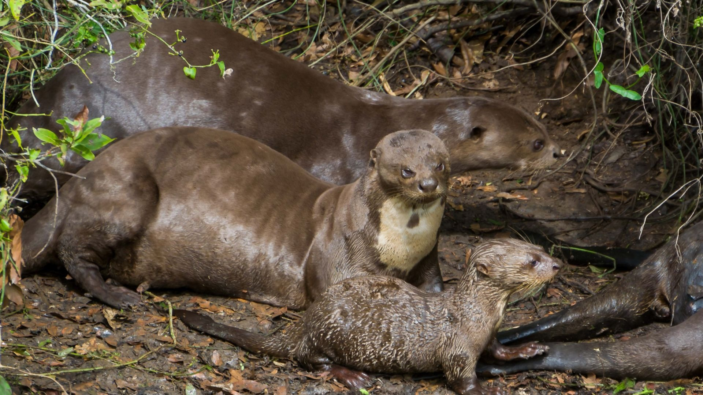
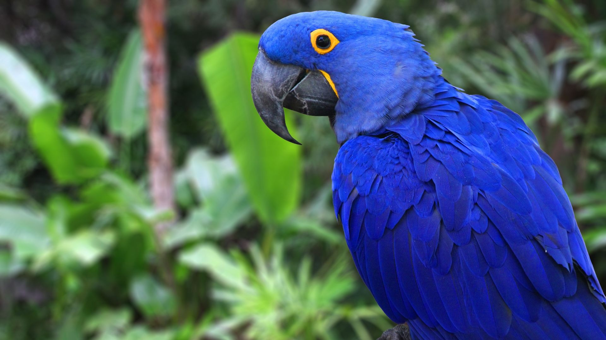
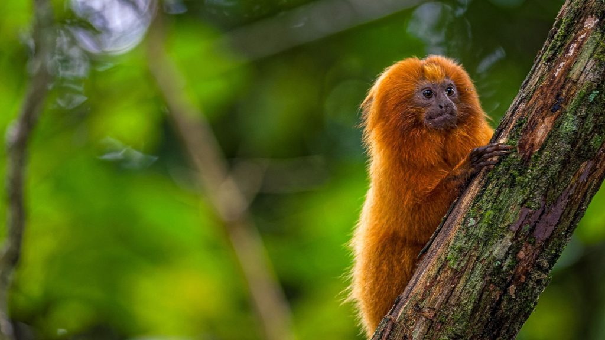
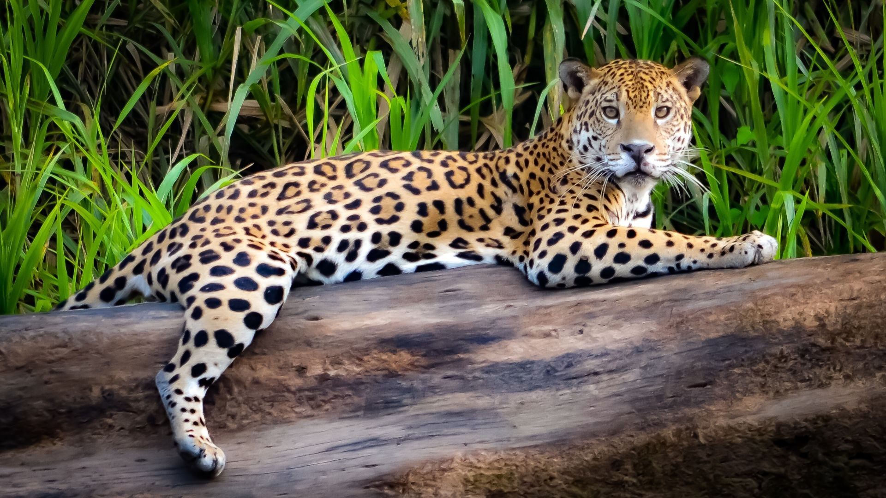
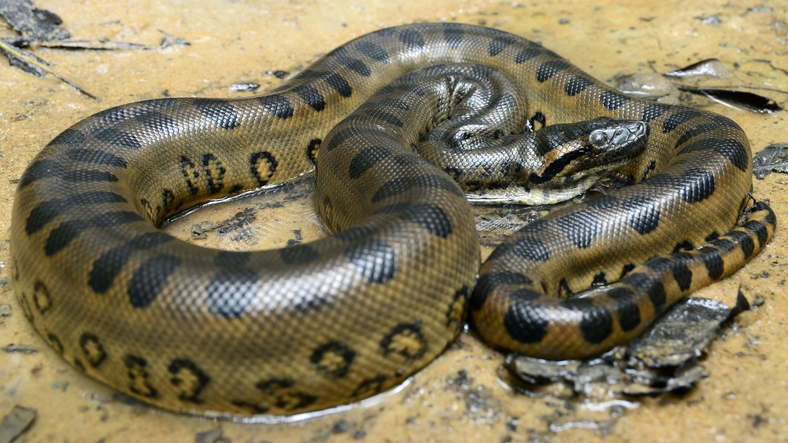

Segundo o ICMBio, instituto responsável pelo mapeamento da fauna, o Brasil possui a maior biodiversidade de animais do mundo. São mais de 120 mil espécies de invertebrados, e de aproximadamente 8.930 espécies de vertebrados. O tamanho do Brasil e a grande variedade de climas e características e suas regiões são o que torna possível existir no país um número tão alto de espécies. Dentre os biomas brasileiros, os maiores em biodiversidade são a Amazônia, a Mata Atlântica e o Cerrado.
Abaixo está exposto cards com informações referentes à 6 animais típicos da fauna brasileira.
Ariranha
 Saiba MaisArara-Azul
 Saiba MaisBoto cor de rosa
Saiba MaisMico leão dourado
 Saiba MaisOnça Pintada
 Saiba MaisSucuri
 Saiba Mais